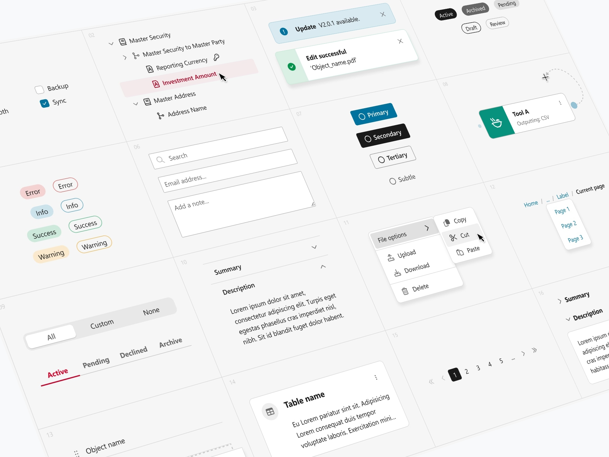
TL;DR
Most designers work on one design system, maybe two. At S&P Global I've built four — each one a response to a different set of constraints, priorities, and leadership mandates. From a greenfield build with complete creative control, through a company merger and full rebrand, to adapting a locked third-party library for 20–30 designers across half a dozen product verticals, and finally reimagining that system with a glassmorphic aesthetic that's now rolling out across products. The goalposts kept moving but the systems kept shipping; design doesn't always follow a clean, linear path and that's fine. It's more important to always strive to create the best thing you can within the constraints you're presented with.
-
Role:
Sole owner -
Systems built:
4 -
Designers served:
20–30 -
Timeline:
2021-to date -
Status:
Forever ongoing
The honest version of this story
Most design system case studies tell a clean story. Problem identified, system built, designers
rejoice.
This one doesn't go like that.
Over the past few years at S&P Global, I've built — and rebuilt — the design system from the ground
up,
multiple times. Through a company merger and full rebrand, two major version overhauls, a wholesale
pivot from a custom system to an off-the-shelf one, and then a ground-up reimagining of that. Each
time,
the goalposts moved because leadership priorities shifted — not because the previous system failed.
In
some cases it was being called best in class right up until the moment it was replaced.
What I've learned from that is something a cleaner story wouldn't teach: how to build systems that
are
genuinely good, stay pragmatic under constraint, and bring teams with you even when the direction
keeps
changing.
- Jan 2022 I joined IHS Markit and started EDMEnterprise Data Management. This was a powerful platform that could pull disparate data from various sources, process it, and spit out a single golden truth. UI; a budding design system specific to that product.
- Mar 2022 IHS Markit merged with S&P Global so EDM UI had to get rebranded.
- Late 2022 An designer-reorg pulled designer into one team and made EDM UI the defacto system. It was also rebadged to Solutions UI.
- June 2023 Beginning of the Solutions UI 2.0 initiative spanning the next 6-ish months. Started as a major refactor and would fold in new closed-beta features from Figma such as variables, nested variants, modes, etc.
- Feb 2024 Solutions UI 2.0 was released as the bleading-edge, best in class design system; cementing it's position as the company's primary design system.
- May 2024 Dark mode was finally added to Solutions UI.
- Sep 2025 Development leadership attitudes shifted towards an off-the-shelf system; they chose Kendo Kendo UI is an HTML5 user interface framework for building interactive and high-performance websites and applications..
- Nov 2025 S&P x Kendo 1.0 was released, taking the Kendo UI system and adapting it's styling to match Solutions UI.
- Mar 2026 Product want a design language that is very modern and different was everything that came before.
- Apr 2026 S&P x Kendo - Glass edition is released for use.
Where it started
When I joined what was then IHS Markit, fresh from my masters, design teams were deeply siloed. Each
product
had its own designers hired directly into that product — and its own UI conventions to match. There
was
no shared design language. No shared tooling. No common understanding of what a component even
was.
My first major project, working closely with my mentor, was to help build a design system from
scratch
for
the
product we worked on. We had complete creative control — which, looking back, was both a gift and a
trap. Without constraints, you learn a lot about design, and Figma. You also learn a lot about what
happens when
you build something with no organisational infrastructure around it.
That system was called EDM UI. Developers eventually built a corresponding code component library in
Storybook, using Kendo Angular as a rough base — though heavily customised. It was scrappy and
imperfect, but it was ours.
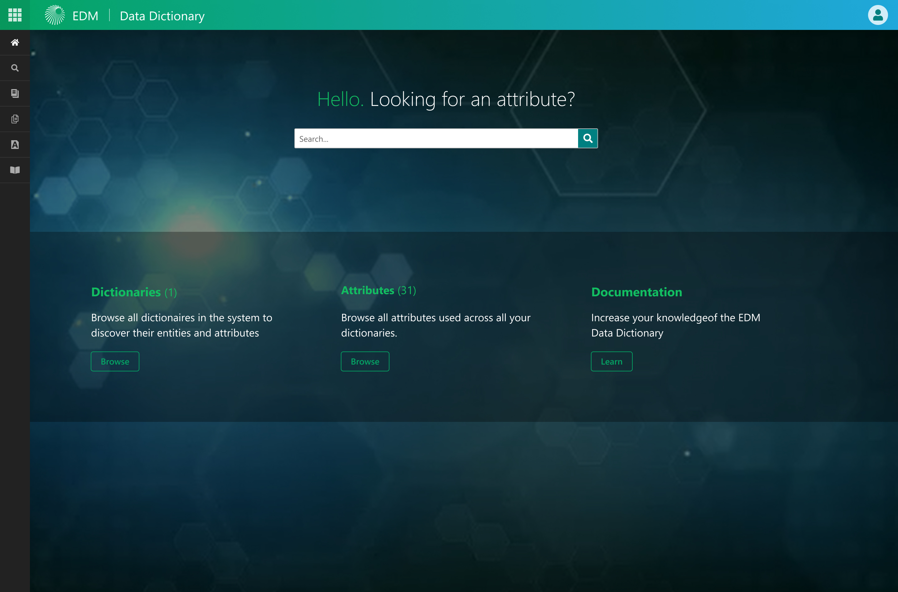
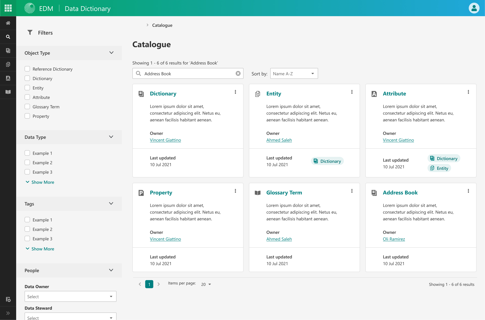
The rebrand: learning to design under constraints
Before EDM UI had fully matured, IHS Markit merged with S&P Global. The merger brought an
immediate,
non-negotiable requirement: a complete visual rebrand. Every component, every style (we didn't
have
tokens yet), every design
decision needed to reflect the S&P brand.
It was my first real experience of designing under constraint rather than from a blank canvas.
New
colour
palette, new typography, new brand rules — and a system that needed to keep working for the
teams
already using it. The rebrand wasn't just a cosmetic exercise; it forced a more rigorous
approach to
theming that would pay off considerably later.
The rebranded system was renamed Solutions UI and with ongoing internal restructuring that
centralised
design into a shared resource model — designers assigned across products rather than embedded in
them —
it became the default system for all designers at the company.
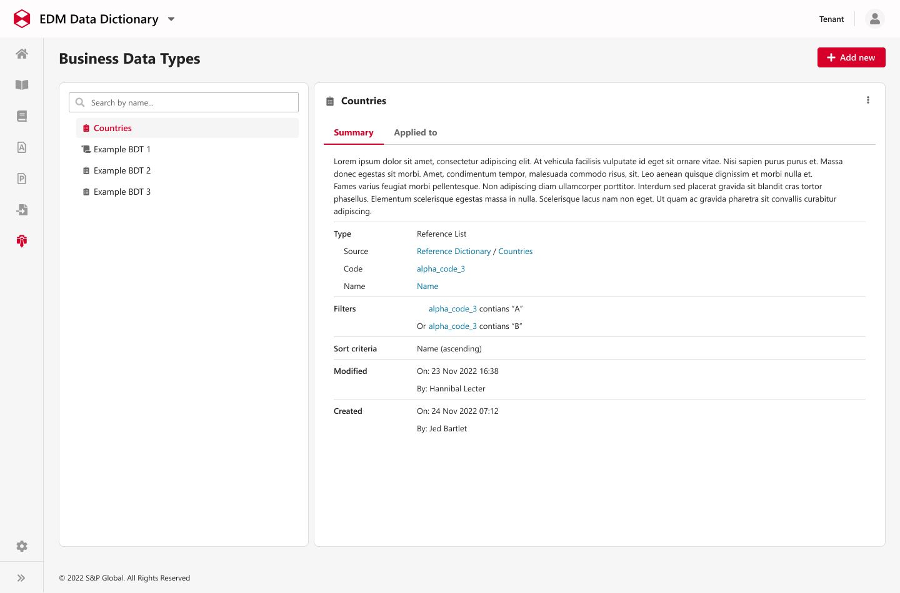
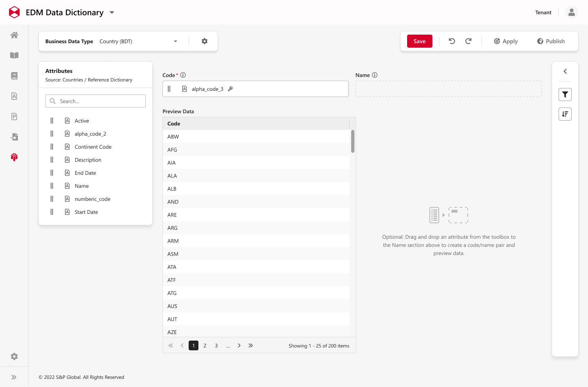
Solutions UI 2.0: the complexity problem
As Solutions UI bedded in across more products and more designers, a problem became harder to ignore.
The
component library had grown organically, and organic growth in Figma without discipline produces one
thing reliably: bloat.
The text input component alone had nearly 2,000 variants. Two thousand. For one component. The
system
was
technically comprehensive but sometimes challenging to use — slow to load, hard to navigate, and a
nightmare
to maintain.
for anyone who hadn't built it themselves.
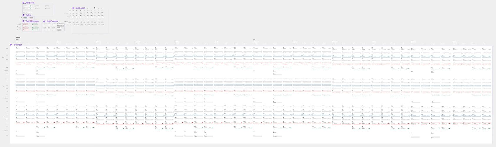
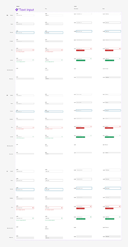
The 2.0 effort was an exercise in rigorous simplification. I rearchitected the components from the
ground
up, rebuilding each one with a cleaner variant structure and a tighter property model. The text input
went from over 1,000 variants to around 96 — without losing a single feature. In most cases,
components came out of the rebuild more capable than they went in, just expressed far more efficiently.
Alongside the component rearchitecture, I implemented Figma variables (a brand new beta feature at the
time) across the entire library and
built
dark mode from scratch. The approach was deliberately systematic: semantic variable naming, with light
and dark mode values baked in at the token level. The practical outcome was that dark mode required zero
additional effort from any designer using the system — switching a product from light to dark was a
single toggle. That expectation — that all products would support both modes — is now the standard
across the organisation.
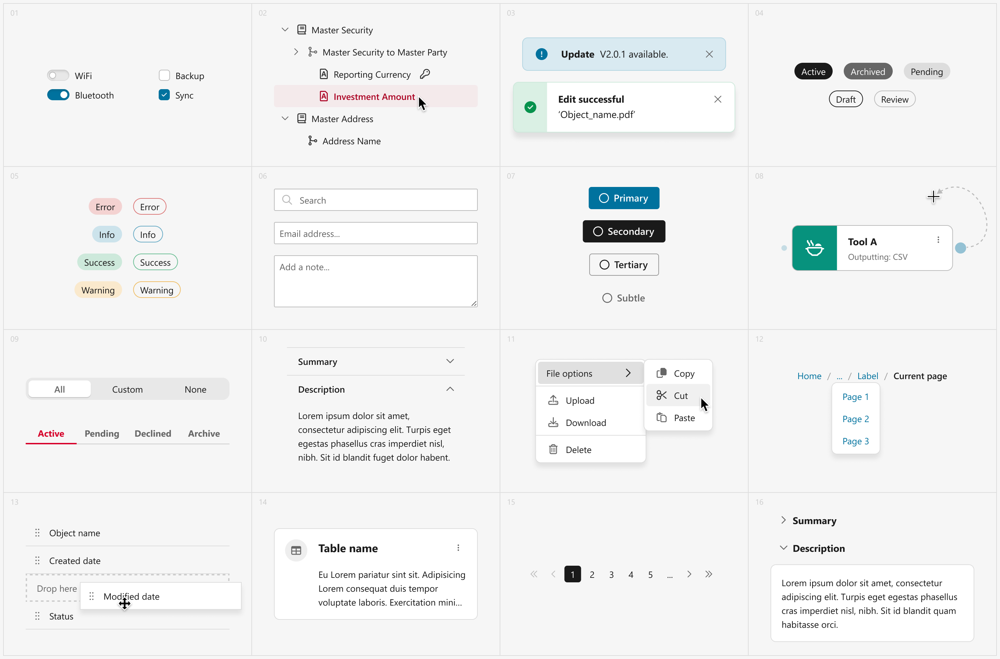
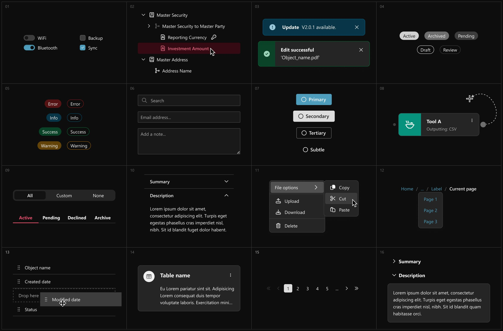
The response to Solutions UI 2.0 was the clearest signal I've had that the work was landing. Feedback came in from stakeholders, leadership, and the occasional client: not just that it looked good, but that it felt immediately intuitive. More meaningfully, when the company's central design function brought previously siloed teams under one umbrella, Solutions UI 2.0 won out over every other product-level system that had existed in parallel. It was, by most accounts, best in class — and became the de facto standard as a result.
The pivot to Kendo: designing with someone else's system
Then leadership shifted again.
The decision came down from development leadership: no more custom system. The maintenance overhead
was
unsustainable, and the directive was to move to an off-the-shelf component library so developers
could
move faster. After several months of ambiguity about which library that would be, the answer landed:
Kendo. And it was needed immediately, because the absence of a settled system had become a genuine
blocker for both design and development.
I want to be honest about how this felt. Solutions UI 2.0 had just been called best in class and now
I
was being asked to set it aside for a pre-built library I hadn't chosen, on a timeline I hadn't
set. But I also believe — genuinely — in give and take. Development teams have constraints that are
just
as
real as design ones. A system nobody maintains isn't actually a system. So I got on with it.
The task was significant: take the available Kendo component library for Figma, understand its
variable
structure and internal logic, and adapt it to work for S&P's brand and our designers — without
customising components to the point where they diverged from the code library. That tightrope was
the
whole challenge: too much change and you break the dev parity that's the entire reason for using an
off-the-shelf system; too little and you hand designers a file that doesn't match the brand and
doesn't
make sense to use.
The Kendo library as-distributed was not particularly designer-friendly. The variable structure was
opaque, the component organisation was cluttered, and some of the interaction models were
counterintuitive. I spent time genuinely understanding how it was built before touching it — then
worked
through a process of rationalising the variable collections, removing noise and unused components,
adjusting my own mental models to fit Kendo's constraints, and making the whole thing
navigable.
The result — S&P x Kendo — is now the standard used by designers across multiple verticals: private
markets, public markets, enterprise solutions, lending, and software. Roughly 20–30 designers use it
daily. Once it shipped, teams who'd been waiting were able to move immediately from lo-fi UX work
into
developer-ready handover artefacts.
After I shipped the system, I ran onboarding sessions with the wider design team — walking them
through
the structure, the constraints, and how to work effectively within a system that's less flexible
than
what they'd been used to.
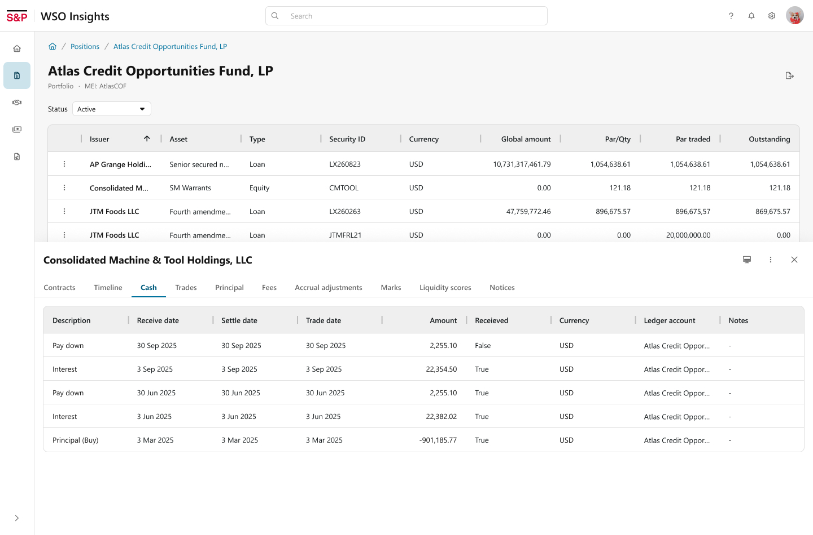
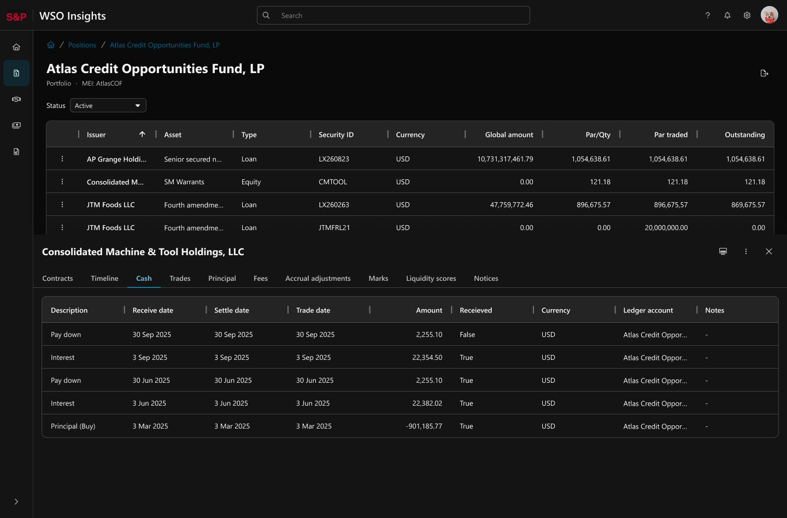
Kendo Glass: finding the middle ground
The most recent chapter started with some of the most frustrating feedback a designer can receive:
leadership wanted certain products to "pop" more.
Vague as that was, I took it seriously enough to explore what it could actually mean within the
constraints of the Kendo system. What could we change that was genuinely achievable — low
development
cost, low design overhead — but would give products a meaningfully different visual
character?
That exploration eventually crystallised
into
a clear direction: a glassy, translucent aesthetic layered onto the Kendo foundation. Think frosted
surfaces, depth through blur and translucency, a distinctly contemporary feel — while keeping every
component behaviour identical to standard Kendo underneath.
I did the majority of the system build myself. Kendo Glass took about two weeks of concentrated work
once
the direction was confirmed, building on the structural understanding I already had from the S&P x
Kendo
effort. The design challenge was considerable: a floaty, translucent aesthetic creates problems for
data
density, contrast, and legibility that a flat system doesn't have. Every pattern needed revisiting
to
make sure it held up in the new visual language.
There was one moment of doubt I raised openly with the team: was a hyper-modern glassy UI actually
right
for users in traditional finance, who might value high contrast and information density over visual
sophistication? The response that came back has stayed with me: "Almost all these users have iPhones
—
this isn't the first time they've seen a glassy UI." It was a good counterpoint. Glassmorphism isn't
experimental anymore; it's a familiar, trusted visual language for the people we're designing
for.
Kendo Glass is now in active implementation across a number of products.
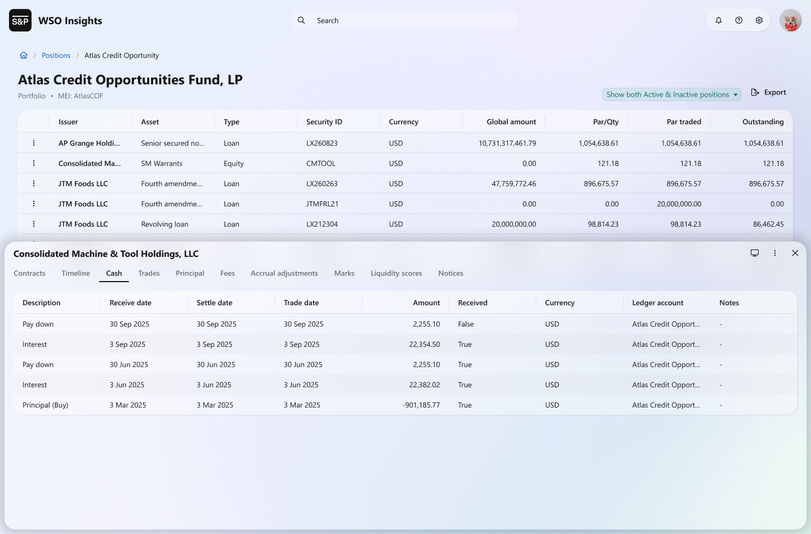
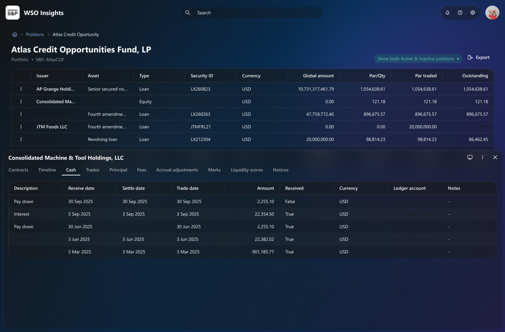
Key take away
The systems work at S&P Global spans everything from greenfield creative control to working within
the
tightest possible third-party constraints. I've navigated a merger rebrand, built dark mode into a
system at the token level, reduced a single component from 2,000 variants to 80 without dropping a
feature, adapted an opaque off-the-shelf library into something 20–30 designers can actually use,
and
found a way to inject genuine visual creativity back into a locked system.
None of it followed a straight line. That's fine. The job isn't to have a straight line — it's to
keep
building good things regardless in which direction the line goes next.